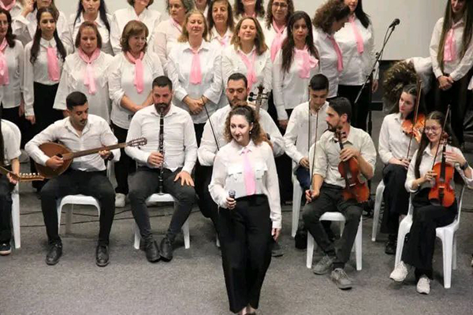

فرقة كور الزهور المسرحية
الرئيسية
من نحن
المقالات
أعمال الفرقة
مهرجان الماغوط
تواصل معنا
AR
🇸🇾
العربية
🇺🇸
English
🇩🇪
Deutsch
آخر الأخبار:
خشبةٌ تصنع عالماً...حكاياتٌ تولد هنا
تاريخ من الإبداع المسرحي منذ التأسيس ومستمرون...
شاهد أعمالنا
نبذة عن الفرقة

جاري التحميل...
رؤيتنا
جاري التحميل...
تصفح الأرشيف الكامل وتاريخ الفرقة
أبرز أعمال الفرقة
جاري تحميل الأعمال...
تصفح جميع الأعمال
الرحلة المسرحية